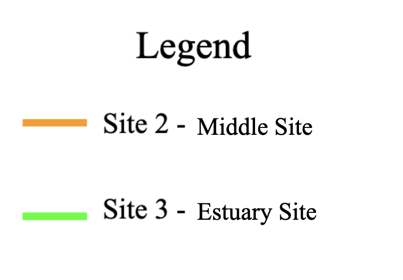

4 Results
4.1 Discharge at Upstream Site
4.1.1 Data Retrieval
#Upstream Site
site_no1 <- "01463500"
q1 <- readNWISdv(siteNumbers = site_no1,
parameterCd = '00060',
startDate = '1995-09-30',
endDate = '2021-01-01') %>%
rename(q_cfs = X_00060_00003) %>%
addWaterYear(.) %>%
select(-agency_cd, -X_00060_00003_cd)#Monthly averages at Upstream site
q_month_means <- q1 %>%
mutate(month = month(Date),
year = year(Date)) %>%
group_by(year, month) %>%
summarize(q_mean = mean(q_cfs, na.rm = T),
q_min = min(q_cfs, na.rm = T),
q_median = median(q_cfs))4.1.2 Mean Discharge
#Trend of all 12 months at Upstream Site
ggplot(q_month_means, aes(x = year, y = q_mean)) +
geom_line() +
facet_wrap(~month, scales = 'free') +
scale_y_log10()+
ylab('Mean Discharge (cfs)') +
xlab('Year')Figure 4.1: Figure 4. Trends for all 12 months mean discharge data from 1995 to 2021 for the upstream site in the Delaware River.
On Figure 4. we see all of the mean discharge values for the water years from 1995 to 2021. Going month to month, it is difficult to see any notable trends and when the Mann-Kendall test is applied, it proves that most of the trends are non-significant. November through May have much higher mean discharge values from winter weather, which I am avoiding in my research mainly due to the application of road salt. June and July values are a little bit lower, but still have a slight increasing trend over the years. Let’s look at the plots for August and September to see how their mean discharge values behave.
4.1.3 Mann-Kendall Test of August and September Trends
#Upstream Site plot of August Trends
q_aug <- q_month_means %>%
filter(month == 8)
ggplot(q_aug, aes(x = year, y = q_mean), size = 2) +
geom_line() +
scale_y_log10()+
ylab('Mean Discharge (cfs)') +
xlab('Water Year')Figure 4.2: Figure 5. August trends for the upstream site in the Delaware River using mean discharge data from 1995 to 2021.
#Mann-Kendall Test
mk.test(log10(q_aug$q_mean))##
## Mann-Kendall trend test
##
## data: log10(q_aug$q_mean)
## z = 2.0319, n = 25, p-value = 0.04217
## alternative hypothesis: true S is not equal to 0
## sample estimates:
## S varS tau
## 88.0000000 1833.3333333 0.2933333sens.slope(log10(q_aug$q_mean))##
## Sen's slope
##
## data: log10(q_aug$q_mean)
## z = 2.0319, n = 25, p-value = 0.04217
## alternative hypothesis: true z is not equal to 0
## 95 percent confidence interval:
## 0.002128183 0.026097446
## sample estimates:
## Sen's slope
## 0.01278841up_aug_mk <- sens.slope((q_aug$q_mean))
print(up_aug_mk)##
## Sen's slope
##
## data: (q_aug$q_mean)
## z = 2.0319, n = 25, p-value = 0.04217
## alternative hypothesis: true z is not equal to 0
## 95 percent confidence interval:
## 24.7957 360.0000
## sample estimates:
## Sen's slope
## 150.2684The month of August has a much more visible trend of mean discharge increasing. So when we apply the Mann-Kendall test, we find a significant trend with a slope of 150.27. Proving that discharge is increasing over time especially in August.
#Upstream Site plot of September Trends
q_sept <- q_month_means %>%
filter(month == 9)
ggplot(q_sept, aes(x = year, y = q_mean), size = 1.5) +
geom_line() +
scale_y_log10()+
ylab('Mean Discharge (cfs)') +
xlab('Water Year')Figure 4.3: Figure 6. September trends for the upstream site in the Delaware River using mean discharge data from 1995 to 2021.
#Mann-Kendall Test
mk.test(log10(q_sept$q_mean))##
## Mann-Kendall trend test
##
## data: log10(q_sept$q_mean)
## z = 0.13225, n = 26, p-value = 0.8948
## alternative hypothesis: true S is not equal to 0
## sample estimates:
## S varS tau
## 7.000000e+00 2.058333e+03 2.153846e-02sens.slope(log10(q_sept$q_mean))##
## Sen's slope
##
## data: log10(q_sept$q_mean)
## z = 0.13225, n = 26, p-value = 0.8948
## alternative hypothesis: true z is not equal to 0
## 95 percent confidence interval:
## -0.01243574 0.01360223
## sample estimates:
## Sen's slope
## 0.0003784566up_sept_mk <- sens.slope((q_sept$q_mean))
print(up_sept_mk)##
## Sen's slope
##
## data: (q_sept$q_mean)
## z = 0.13225, n = 26, p-value = 0.8948
## alternative hypothesis: true z is not equal to 0
## 95 percent confidence interval:
## -127.2727 135.4444
## sample estimates:
## Sen's slope
## 2.8Now Looking at Figure 6. for September, there does not seem to be any visible trends and the majority of the points lie between 3000 and 6000 cfs with some much higher outliers. Applying the Mann-Kendall test gives us a non-significant trend with a 2.8 slope. Telling us that the average discharge is also increasing for the month of September, just not as much as August.
It makes sense for August to have larger values than September because of how large the mean discharge values are for the winter months. They seem to decrease to September and then increase again in October re-starting the cycle.
4.1.4 Median Discharge
#Upstream Site
ggplot(q_month_means, aes(x = year, y = q_median), size = 1.5) +
geom_line() +
facet_wrap(~month, scales = 'free') +
scale_y_log10()+
ylab('Median Discharge (cfs)') +
xlab('Year')Figure 4.4: Figure 7. Trends for the upstream site in the Delaware River using median discharge data from 1995 to 2021.
Figure 7, is very similar to Figure 4. however, the data plots are closer together making it a little easier to see increasing trends for all months. Showing that over time, the discharge rate upstream in the Delaware River is increasing.
With discharge increasing in the Delaware River, let’s look at how Specific Conductivity plays into this.
4.2 Specific Conductivity Trends
4.2.1 Upstream site
site_no1 <- "01463500"
Spec_Cond1 <- read.csv('data/spefcond1.csv')
sc1 <- readNWISuv(siteNumbers = site_no1,
parameterCd = '00095',
startDate = '1995-09-30',
endDate = '2021-01-01') %>%
rename(sc_um = X_00095_00000) %>%
addWaterYear(.) %>%
select(-agency_cd, -X_00095_00000_cd)
sc_mean_t <- sc1 %>%
mutate(month = month(dateTime),
year = year(dateTime)) %>%
group_by(year, month) %>%
summarize(sc_mean1 = mean(sc_um, na.rm = T),
sc_min1 = min(sc_um, na.rm = T),
sc_median1 = median(sc_um))
ggplot(sc_mean_t, aes(x = year, y = sc_mean1), size = 2) +
geom_line() +
facet_wrap(~month, scales = 'free') +
scale_y_log10()+
ylab('Mean Specific Conductivity') +
xlab('Year')Figure 4.5: Figure 8. Average specific conductivity trends for the upstream site in the Delaware River using data from 1995 to 2021.
Figure 8. shows the mean specific conductivity for the upstream site for the Delaware River, which August and September have the largest values.
4.2.2 Middle site
site_no2 <- "01482100"
Spec_Cond2 <- read.csv('data/spefcond2.csv')
sc2 <- readNWISuv(siteNumbers = site_no2,
parameterCd = '00095') %>%
mutate(dateTime = lubridate::as_datetime(dateTime),
date = lubridate::as_date(dateTime))%>%
group_by(site_no, dateTime)%>%
summarize(sc_um_min_2 = min(X_Lower.Sensor_00095_00000),
sc_um_mean_2 = mean(X_Lower.Sensor_00095_00000),
sc_um_max_2 = max(X_Lower.Sensor_00095_00000))
sc_mean_dm <- sc2 %>%
mutate(month = month(dateTime),
year = year(dateTime)) %>%
group_by(year, month) %>%
summarize(sc_mean2 = mean(sc_um_mean_2, na.rm = T),
sc_min2 = min(sc_um_min_2, na.rm = T),
sc_max2 = max(sc_um_max_2))
ggplot(sc_mean_dm, aes(x = year, y = sc_mean2), size = 2) +
geom_line() +
facet_wrap(~month, scales = 'free') +
scale_y_log10()+
ylab('Mean Specific Conductivity') +
xlab('Year')4.2.3 Estuary site
site_no3 <- "01412350"
Spec_Cond3 <- read.csv('data/spefcond3.csv')
sc3 <- readNWISuv(siteNumbers = site_no3,
parameterCd = '00095',
startDate = '2021-03-01',
endDate = '2022-04-07') %>%
rename(sc_um_3 = X_Lower_00095_00000) %>%
addWaterYear(.) %>%
select(-agency_cd, -X_Upper_00095_00000_cd, -X_Upper_00095_00000,
-X_Lower_00095_00000_cd, -tz_cd)
sc_mean_sj <- sc3 %>%
mutate(month = month(dateTime),
year = year(dateTime)) %>%
group_by(year, month) %>%
summarize(sc_mean3 = mean(sc_um_3, na.rm = T),
sc_min3 = min(sc_um_3, na.rm = T),
sc_max3 = max(sc_um_3))
ggplot(sc_mean_sj, aes(x = year, y = sc_mean3)) +
geom_line() +
facet_wrap(~month, scales = 'free') +
scale_y_log10()+
ylab('Mean Specific Conductivity') +
xlab('Year')4.2.4 Comparing middle and estuary site’s Specific Conductivity
sc_mean_dm <- sc_mean_dm %>%
mutate(day = 1)
sc_mean_dm$Date <- as.Date(with(sc_mean_dm, paste(year, month, day, sep= "-")), '%Y-%m-%d')
sc_mean_sj <- sc_mean_sj %>%
mutate(day = 1)
sc_mean_sj$Date <- as.Date(with(sc_mean_sj, paste(year, month, day, sep= "-")), '%Y-%m-%d')
sc_dm_sj <- right_join(sc_mean_dm, sc_mean_sj, by ='Date')
p1 <- ggplot(sc_dm_sj) +
geom_line(aes(x = Date, y = sc_mean2*10), color = "Orange", size = 1.5)+
geom_line(aes(x = Date, y = sc_mean3), color = "Green", size = 1.5)+
ylab('SC') +
xlab('Water Year')+
theme_classic()+
scale_color_identity(guide = "legend")
p1 + scale_y_continuous(name = "Estuary Site", sec.axis = sec_axis(trans =~. / 10, name= "Middle Site"))+
theme_few(base_size =20)+
ggtitle("Specific Conductivity")Figure 4.6: Figure 9. Mean Specific Conductivity trends for the Delaware River’s Middle site and Estuary site from March 2021 to April 2022.
 Looking at Figure 9. which shows specific conductivity at the Middle and Estuary sites, we can see that the Estuary has a lot more saltwater which makes sense for it’s location. However, the middle site has more dramatic increases in saltwater that occur in July and January.
#Mann-Kendall Test (Middle Site)
mk.test(log10(sc_dm_sj$sc_mean2))##
## Mann-Kendall trend test
##
## data: log10(sc_dm_sj$sc_mean2)
## z = -0.21898, n = 14, p-value = 0.8267
## alternative hypothesis: true S is not equal to 0
## sample estimates:
## S varS tau
## -5.00000000 333.66666667 -0.05494505sens.slope(log10(sc_dm_sj$sc_mean2))##
## Sen's slope
##
## data: log10(sc_dm_sj$sc_mean2)
## z = -0.21898, n = 14, p-value = 0.8267
## alternative hypothesis: true z is not equal to 0
## 95 percent confidence interval:
## -0.06066400 0.05252087
## sample estimates:
## Sen's slope
## -0.01274701sc_2_mk <- sens.slope((sc_dm_sj$sc_mean2))
#Mann-Kendall Test (Estuary Site)
mk.test(log10(sc_dm_sj$sc_mean3))##
## Mann-Kendall trend test
##
## data: log10(sc_dm_sj$sc_mean3)
## z = 0, n = 14, p-value = 1
## alternative hypothesis: true S is not equal to 0
## sample estimates:
## S varS tau
## 1.00000000 333.66666667 0.01098901sens.slope(log10(sc_dm_sj$sc_mean3))##
## Sen's slope
##
## data: log10(sc_dm_sj$sc_mean3)
## z = 0, n = 14, p-value = 1
## alternative hypothesis: true z is not equal to 0
## 95 percent confidence interval:
## -0.007520445 0.009434203
## sample estimates:
## Sen's slope
## 0.0004781573sc_3_mk <- sens.slope((sc_dm_sj$sc_mean3))
print(sc_2_mk)##
## Sen's slope
##
## data: (sc_dm_sj$sc_mean2)
## z = -0.21898, n = 14, p-value = 0.8267
## alternative hypothesis: true z is not equal to 0
## 95 percent confidence interval:
## -69.43071 102.68736
## sample estimates:
## Sen's slope
## -8.703923print(sc_3_mk)##
## Sen's slope
##
## data: (sc_dm_sj$sc_mean3)
## z = 0, n = 14, p-value = 1
## alternative hypothesis: true z is not equal to 0
## 95 percent confidence interval:
## -357.2009 481.0441
## sample estimates:
## Sen's slope
## 21.142854.3 Discharge vs. Specific Conductivity Trends at Upstream Site
#Upstream Site
q_month_means <- q_month_means %>%
mutate(day =1)
q_month_means$Date <- as.Date(with(q_month_means, paste(year, month, day, sep= "-")), '%Y-%m-%d')
sc_mean_t <- sc_mean_t %>%
mutate(day = 1)
sc_mean_t$Date <- as.Date(with(sc_mean_t, paste(year, month, day, sep= "-")), '%Y-%m-%d')
q_sc_t <- right_join(q_month_means, sc_mean_t, by = 'Date')
p2 <- ggplot(q_sc_t) +
geom_line(aes(x = Date, y = q_mean), color ="blue") +
geom_line(aes(x = Date, y = sc_mean1*100), color = "red")+
xlab('Water Year')+
scale_y_log10()+
ylab('Q') +
theme_classic()
p2 + scale_y_continuous(name = "Discharge (cfs)", sec.axis = sec_axis(trans =~. / 100, name= "Specific Conductivity"))+
theme_few(base_size =20)+
scale_color_identity(guide = "legend")+
ggtitle("Upstream Site")Figure 4.7: Figure 10. Comparison of the Delaware River’s upstream site discharge and specific conductivity from 1995 to 2021.
Figure 10. shows how discharge and specific conductivity act with each other. With the red line marking specific conductivity, all of the highest points are when discharge has it’s lowest points. This tells us that discharge and specific conductivity have a relationship where salt water intrudes further when flow is at it’s lowest. Using the Mann-Kendall test, the trend is significant with a slight slope of 0.15.
#Mann-Kendall Test (Upstream Site Discharge)
mk.test(log10(q_sc_t$q_mean))##
## Mann-Kendall trend test
##
## data: log10(q_sc_t$q_mean)
## z = -0.42642, n = 160, p-value = 0.6698
## alternative hypothesis: true S is not equal to 0
## sample estimates:
## S varS tau
## -2.900000e+02 4.593333e+05 -2.279874e-02sens.slope(log10(q_sc_t$q_mean))##
## Sen's slope
##
## data: log10(q_sc_t$q_mean)
## z = -0.42642, n = 160, p-value = 0.6698
## alternative hypothesis: true z is not equal to 0
## 95 percent confidence interval:
## -0.0012810631 0.0007030417
## sample estimates:
## Sen's slope
## -0.0002306814up_q_mk <- sens.slope((q_sc_t$q_mean))
#Mann-Kendall Test (Upstream Site SC)
mk.test(log10(q_sc_t$sc_mean1))##
## Mann-Kendall trend test
##
## data: log10(q_sc_t$sc_mean1)
## z = 2.4921, n = 160, p-value = 0.0127
## alternative hypothesis: true S is not equal to 0
## sample estimates:
## S varS tau
## 1.690000e+03 4.593333e+05 1.328616e-01sens.slope(log10(q_sc_t$sc_mean1))##
## Sen's slope
##
## data: log10(q_sc_t$sc_mean1)
## z = 2.4921, n = 160, p-value = 0.0127
## alternative hypothesis: true z is not equal to 0
## 95 percent confidence interval:
## 6.507236e-05 6.021629e-04
## sample estimates:
## Sen's slope
## 0.0003374919up_sc_mk <- sens.slope((q_sc_t$sc_mean1))
print(up_q_mk)##
## Sen's slope
##
## data: (q_sc_t$q_mean)
## z = -0.42642, n = 160, p-value = 0.6698
## alternative hypothesis: true z is not equal to 0
## 95 percent confidence interval:
## -30.30446 16.96516
## sample estimates:
## Sen's slope
## -5.632803print(up_sc_mk)##
## Sen's slope
##
## data: (q_sc_t$sc_mean1)
## z = 2.4921, n = 160, p-value = 0.0127
## alternative hypothesis: true z is not equal to 0
## 95 percent confidence interval:
## 0.02871575 0.27459790
## sample estimates:
## Sen's slope
## 0.1508441#discharge on x-axis and sc on y-axis
ggplot(q_sc_t) +
geom_point(aes(x = q_mean, y = sc_mean1, color = Date)) +
xlab('Water Year')+
scale_y_log10()+
ylab(expression(Specific~Conductivity~(mu*S/cm))) +
xlab('Discharge (cfs)') +
theme_classic() +
scale_color_gradient(low = 'cyan', high = 'deeppink', trans = 'date')Figure 4.8: Figure 11. Comparing discharge to specific conductivity in relation to each other from 1995 to 2021 at the Upstream Site
Trends observed in Figure 10. of salinity levels increasing as stream flow decreases will only be an issue when discharge is low. Figure 11. compares specific conductivity with discharge by year and shows that the majority of years from 1995 to 2021 have lower discharge compared to specific conductivity.
knitr::opts_chunk$set(echo = TRUE, message = FALSE, warning = FALSE, results = TRUE)